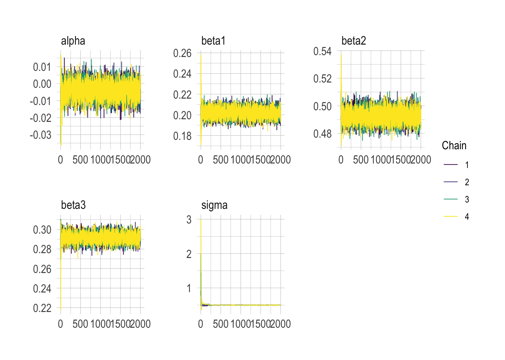
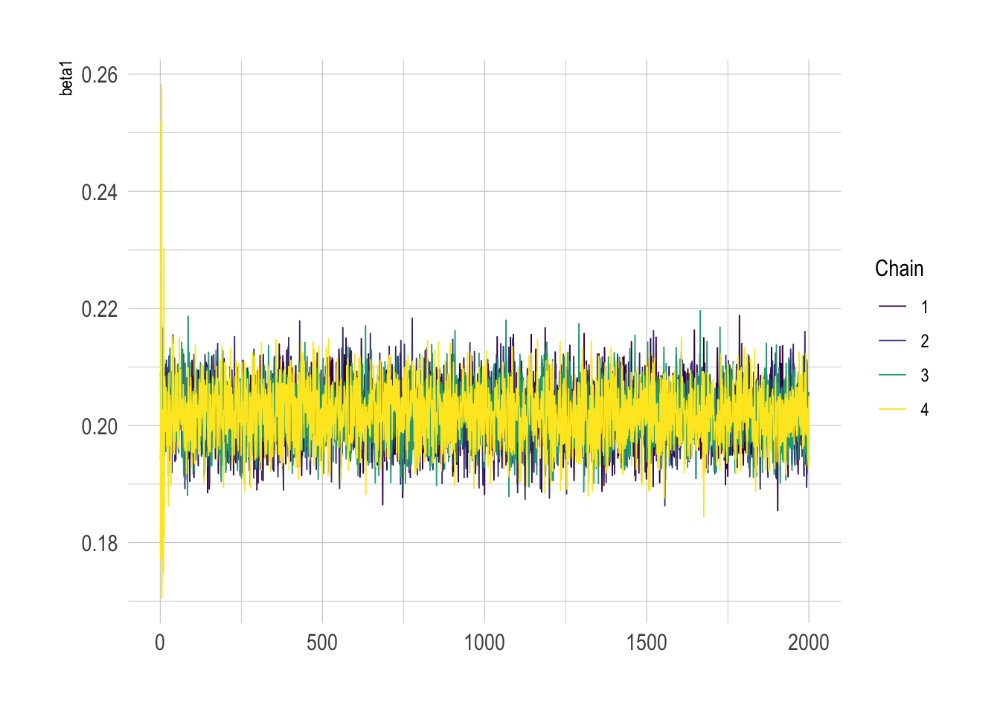
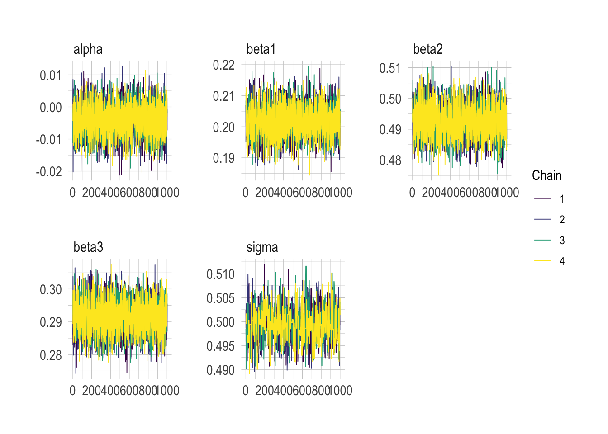
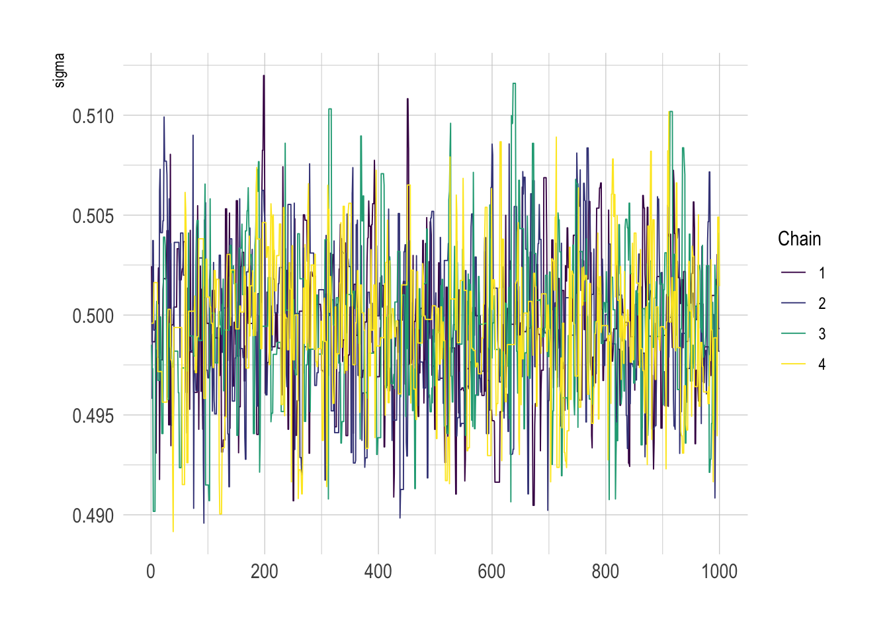
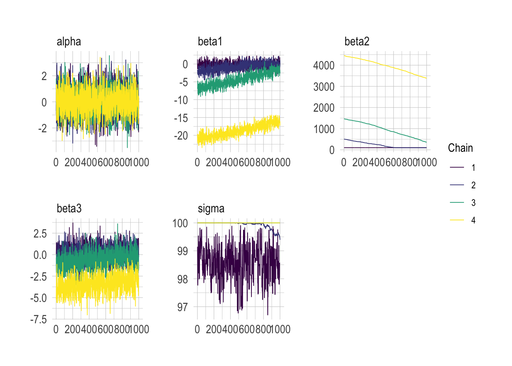
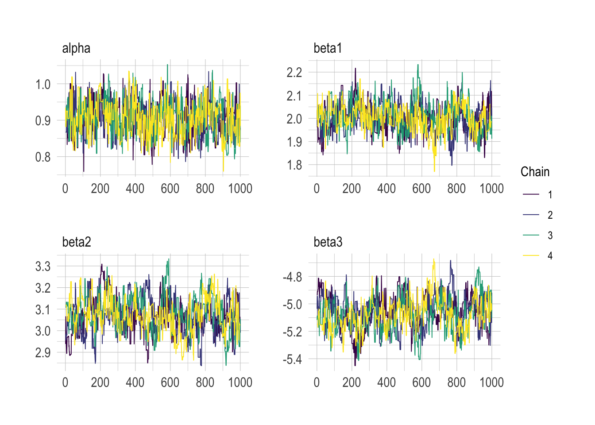
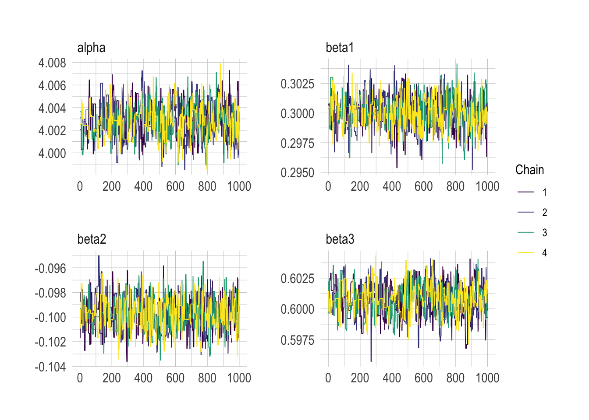

set.seed(1)
p <- 3 # number of explanatory variables
n <- 10000 # number of observations
X <- matrix(round(rnorm(p * n), 2), nrow = n, ncol = p) # explanatory variables
true_betas <- c(0.2, 0.5, 0.3) # coefficients for beta1, beta2, beta3
sigma <- 0.5 # standard deviation of variability around perfect agreement
y <- rnorm(n, X %*% true_betas, sigma)Principles of Bayesian statistics
SHARP Bayesian Modeling for Environmental Health Workshop
Goal of this computing lab session
The goal of this lab is to take some models and concepts from the Introduction to Bayesian Methods lecture and introduce you to the way NIMBLE works.
What’s going to happen in this lab session?
During this lab session, we will:
- Explore how
NIMBLEis written and works; - Write some common regression models (Normal, logistic regression, Poisson);
- Understand how basic model assessment is made; and
- Test out how adjustments of models are made via different priors and more samples.
Introduction
NIMBLE code is written in a slightly unusual format if you’re used to just using base R. It is written in the style of a program called BUGS, which came out a few decades ago and was developed at Imperial College London. But you don’t really need to know about BUGS to be able to use NIMBLE.
We will start with some straightforward examples for situations you’re likely familiar with to introduce the style of writing models. These examples will feature basic regression models using linear predictors.
Some of these models have been adapted from NIMBLE’s examples.
Normal-Normal example
\[ \begin{split} y_i &\sim \text{Normal}(\mu_i, \sigma) \quad i = 1,..., N \\ \mu_i &= \alpha + \beta_1 x_1 + \beta_2 x_2 + \beta_3 x_3 \\ \alpha &= 0 \\ \beta_1 &= 0.2 \\ \beta_2 &= 0.5 \\ \beta_3 &= 0.3 \\ \sigma &= 0.5\\ \end{split} \]
First create some example data:
We also centre the three explanatory variables now, which helps MCMC performance later. Centring shifts the intercept but leaves the slopes unchanged, so the frequentist and Bayesian fits below are directly comparable.
x1 <- X[, 1] - mean(X[, 1])
x2 <- X[, 2] - mean(X[, 2])
x3 <- X[, 3] - mean(X[, 3])Exploratory data analysis
What does the dataset look like?
df <- tibble(y = y, x1 = x1, x2 = x2, x3 = x3)
df |> head()# A tibble: 6 × 4
y x1 x2 x3
<dbl> <dbl> <dbl> <dbl>
1 -0.145 -0.623 -0.796 0.232
2 0.0248 0.187 -1.06 0.232
3 -1.09 -0.833 -1.04 -0.648
4 -1.00 1.61 -1.19 -1.94
5 -0.138 0.337 -0.496 1.03
6 0.345 -0.813 -0.516 -0.288What does equivalent frequentist model output look like for reference? By the way, what’s the interpretation of the 95% CI in this frequentist world?
model_freq <- lm(
y ~ x1 + x2 + x3,
data = df
)
central_est <- t(t(model_freq$coefficients))
conf_int <- confint(model_freq)
cbind(central_est, conf_int) 2.5 % 97.5 %
(Intercept) -0.003936695 -0.01372325 0.005849863
x1 0.201966766 0.19229912 0.211634407
x2 0.492776630 0.48289869 0.502654568
x3 0.291605732 0.28189340 0.301318063Let’s rewrite this model in a Bayesian framework using NIMBLE. It can be written in lots of different ways, but here we’re going to try and stick to defining the priors first, then writing the formula.
code <- nimbleCode({
# priors for parameters
alpha ~ dnorm(0, sd = 100) # prior for alpha
beta1 ~ dnorm(0, sd = 100) # prior for beta1
beta2 ~ dnorm(0, sd = 100) # prior for beta2
beta3 ~ dnorm(0, sd = 100) # prior for beta3
sigma ~ dunif(0, 100) # prior for variance components
# regression formula
for (i in 1:n) {
# n is the number of observations we have in the data
mu[i] <- alpha + beta1 * x1[i] + beta2 * x2[i] + beta3 * x3[i] # manual entry of linear predictors
y[i] ~ dnorm(mu[i], sd = sigma)
}
})Final preparation of the (already centred) data into lists for input into NIMBLE MCMC running
constants <- list(n = n)
data <- list(y = y, x1 = x1, x2 = x2, x3 = x3)Set initial values for MCMC samples (very important for convergence). As in the lecture, we run four chains, so we supply four sets of starting values, deliberately spread out. If all four chains end up in the same place, that is good evidence the sampler has found the posterior rather than got stuck near where it started.
inits <- list(
list(alpha = -1, beta1 = -1, beta2 = -1, beta3 = -1, sigma = 0.5),
list(alpha = 0, beta1 = 0, beta2 = 0, beta3 = 0, sigma = 1),
list(alpha = 1, beta1 = 1, beta2 = 1, beta3 = 1, sigma = 2),
list(alpha = 2, beta1 = -2, beta2 = 2, beta3 = -2, sigma = 3)
)The following code will establish which samples will be used in the sampling of the posteriors. It is not going to run the model yet. If there is a conjugate relationship apparent between prior and posterior (e.g., Normal-Normal, Binomial-Beta, Poisson-Gamma), NIMBLE will automatically detect it here. This is an example where there is a Normal-Normal conjugate relationship
model <- nimbleModel(code, constants = constants, data = data, inits = inits[[1]])Defining modelBuilding modelSetting data and initial valuesRunning calculate on model
[Note] Any error reports that follow may simply reflect missing values in model variables.Checking model sizes and dimensionsmcmcConf <- configureMCMC(model)===== Monitors =====
thin = 1: alpha, beta1, beta2, beta3, sigma
===== Samplers =====
RW sampler (1)
- sigma
conjugate sampler (4)
- alpha
- beta1
- beta2
- beta3Run the MCMC simulations. There are lots of arguments in the main function, nimbleMCMC(). Take a second to look through each of them and make sure you understand where they’re coming from and what they mean as each one is very important.
tic <- Sys.time()
nimbleMCMC_samples_initial <- nimbleMCMC(
code = code,
data = data,
constants = constants,
inits = inits,
niter = 2000, # run 2000 samples per chain
nchains = 4, # four chains, one per set of initial values
setSeed = c(1,2,3,4),
samplesAsCodaMCMC = TRUE,
progressBar = FALSE
)Defining modelBuilding modelSetting data and initial valuesRunning calculate on model
[Note] Any error reports that follow may simply reflect missing values in model variables.Checking model sizes and dimensionsChecking model calculationsCompiling
[Note] This may take a minute.
[Note] Use 'showCompilerOutput = TRUE' to see C++ compilation details.running chain 1...running chain 2...running chain 3...running chain 4...toc <- Sys.time()
toc - ticTime difference of 52.87948 secsWhat is the summary of each estimated parameter from the samples? The following operations will help us understand.
First a summary of how the statistics of the samples of each parameter look
summarise_draws(nimbleMCMC_samples_initial, default_summary_measures())# A tibble: 5 × 7
variable mean median sd mad q5 q95
<chr> <dbl> <dbl> <dbl> <dbl> <dbl> <dbl>
1 alpha -0.00404 -0.00402 0.00506 0.00511 -0.0123 0.00431
2 beta1 0.202 0.202 0.00507 0.00495 0.194 0.210
3 beta2 0.493 0.493 0.00525 0.00512 0.484 0.501
4 beta3 0.292 0.292 0.00504 0.00499 0.283 0.300
5 sigma 0.504 0.500 0.0747 0.00348 0.492 0.520 Then examine how well the model has converged, which typically is identified by how close each rhat value is to 1.00. As in the lecture, rhat compares variation within each chain to variation between the four chains, which is why running more than one chain matters here. If it is much above 1.00 (>1.05) then the samples will not be very well converged and therefore either the model is not well specified or there just needs to be more iterations of the MCMC. It is a little bit of an art to figure that out, but rhat helps.
summarise_draws(nimbleMCMC_samples_initial, default_convergence_measures())# A tibble: 5 × 4
variable rhat ess_bulk ess_tail
<chr> <dbl> <dbl> <dbl>
1 alpha 1.00 7626. 7612.
2 beta1 1.00 7625. 7373.
3 beta2 1.000 8013. 6992.
4 beta3 1.00 7998. 7287.
5 sigma 1.06 44.9 26.9What do the samples of the target parameters actually look like? Let’s have a look at the parameters and their samples from running the model above. There is one colour per chain: we want them overlapping, not drifting apart.
mcmc_trace(nimbleMCMC_samples_initial)
Let’s now focus on beta1 (which we know is 0.2 from setting up initially).
mcmc_trace(nimbleMCMC_samples_initial, pars = c("beta1"))
It looks like all four chains converge quickly from their different starting values to ~0.2 for beta1. But typically we will throw away some samples at the beginning to ensure that the transient samples (which is when the model samples haven’t stabilized around a particular value because they are travelling from the initial values we give them as above for inits) are not included in calculating estimates of the mean and credible intervals, which could bias the results up or down slightly.
For example, you can see how the sigma chains had to travel from their initial values of 0.5, 1, 2 and 3 before stabilising around the true value of 0.5.
This period where we throw away samples (defined by the nburnin argument below) is called the ‘burn in’ or ‘warm up’ period.
Let’s do it again but with a burn in of 1000 samples, i.e., throw away the first 1000 samples because they may not yet be centred around a particular stable value (assuming the model is reasonably parameterized, this will happen at some point).
tic <- Sys.time()
nimbleMCMC_samples_burnin <- nimbleMCMC(
code = code,
data = data,
constants = constants,
inits = inits,
niter = 2000, # collect 2000 samples per chain
nburnin = 1000, # burn in for 1000 iterations
nchains = 4, # four chains, one per set of initial values
setSeed = c(1,2,3,4),
samplesAsCodaMCMC = TRUE,
progressBar = FALSE
)Defining modelBuilding modelSetting data and initial valuesRunning calculate on model
[Note] Any error reports that follow may simply reflect missing values in model variables.Checking model sizes and dimensionsChecking model calculationsCompiling
[Note] This may take a minute.
[Note] Use 'showCompilerOutput = TRUE' to see C++ compilation details.running chain 1...running chain 2...running chain 3...running chain 4...toc <- Sys.time()
toc - ticTime difference of 52.77706 secsWhat is the summary of each estimated parameter from the samples with burn in?
summarise_draws(nimbleMCMC_samples_burnin, default_summary_measures())# A tibble: 5 × 7
variable mean median sd mad q5 q95
<chr> <dbl> <dbl> <dbl> <dbl> <dbl> <dbl>
1 alpha -0.00403 -0.00402 0.00496 0.00511 -0.0123 0.00420
2 beta1 0.202 0.202 0.00492 0.00489 0.194 0.210
3 beta2 0.493 0.493 0.00518 0.00519 0.484 0.501
4 beta3 0.292 0.291 0.00495 0.00501 0.283 0.300
5 sigma 0.499 0.499 0.00357 0.00331 0.494 0.505 And how good do convergence indicators look?
summarise_draws(nimbleMCMC_samples_burnin, default_convergence_measures())# A tibble: 5 × 4
variable rhat ess_bulk ess_tail
<chr> <dbl> <dbl> <dbl>
1 alpha 1.00 4091. 4089.
2 beta1 0.999 3664. 3991.
3 beta2 1.00 4126. 3686.
4 beta3 1.000 4104. 3979.
5 sigma 1.01 878. 963.Now the samples for each parameter look to be very tidily centred around their estimated values, with sigma no longer showing that journey from its initial starting values, as the burn in period has thrown those samples out.
mcmc_trace(nimbleMCMC_samples_burnin)
Let’s focus on the sigma plot
mcmc_trace(nimbleMCMC_samples_burnin, pars = c("sigma"))
Let’s try changing the priors and see if that makes any difference to how the model fits. Take some time to compare this with the code for the original model above. Notice how the real value of beta2 (0.5) is not allowed as a value from the prior it is assigned below.
code_worse_priors <- nimbleCode({
# priors for parameters
alpha ~ dnorm(0, sd = 100) # prior for alpha
beta1 ~ dnorm(0, sd = 100) # prior for beta1
beta2 ~ dunif(100, 100000) # prior for beta2
beta3 ~ dnorm(0, sd = 100) # prior for beta3
sigma ~ dunif(0, 100) # prior for variance components
# regression formula
for (i in 1:n) {
mu[i] <- alpha + beta1 * x1[i] + beta2 * x2[i] + beta3 * x3[i] # manual entry of linear predictors
y[i] ~ dnorm(mu[i], sd = sigma)
}
})Run the MCMC simulations
tic <- Sys.time()
nimbleMCMC_samples_worse_priors <- nimbleMCMC(
code = code_worse_priors,
data = data,
constants = constants,
inits = lapply(
c(500, 1000, 2000, 5000),
function(b2) list(alpha = 0, beta1 = 0, beta2 = b2, beta3 = 0, sigma = 1)
),
niter = 2000,
nburnin = 1000,
nchains = 4,
setSeed = c(1,2,3,4),
samplesAsCodaMCMC = TRUE,
progressBar = FALSE
)Defining modelBuilding modelSetting data and initial valuesRunning calculate on model
[Note] Any error reports that follow may simply reflect missing values in model variables.Checking model sizes and dimensionsChecking model calculationsCompiling
[Note] This may take a minute.
[Note] Use 'showCompilerOutput = TRUE' to see C++ compilation details.running chain 1...running chain 2...running chain 3...running chain 4...toc <- Sys.time()
toc - ticTime difference of 44.65222 secsWhat is the summary of each estimated parameter from the samples with different priors?
summarise_draws(nimbleMCMC_samples_worse_priors, default_summary_measures())# A tibble: 5 × 7
variable mean median sd mad q5 q95
<chr> <dbl> <dbl> <dbl> <dbl> <dbl> <dbl>
1 alpha 0.0156 -0.00428 1.01 1.02 -1.66 1.66
2 beta1 -6.06 -2.21 7.62 3.47 -20.2 0.866
3 beta2 1312. 456. 1585. 528. 100. 4290.
4 beta3 -0.975 -0.601 1.78 1.62 -4.36 1.39
5 sigma 99.6 100.0 0.695 0.000876 98.1 100.0 And how good do convergence indicators look?
summarise_draws(nimbleMCMC_samples_worse_priors, default_convergence_measures())# A tibble: 5 × 4
variable rhat ess_bulk ess_tail
<chr> <dbl> <dbl> <dbl>
1 alpha 1.00 4010. 3346.
2 beta1 2.29 5.00 11.1
3 beta2 3.33 4.45 11.4
4 beta3 1.57 6.89 26.5
5 sigma 2.91 4.61 NA What do the samples look like here?
mcmc_trace(nimbleMCMC_samples_worse_priors)
You can see how the model cannot recover the true value of beta2 because of our choice of prior.
By using a uniform prior without support for the true value of beta2, the model has increased its variance to try and cope with the data.
This is a warning: even though the model has converged, it might not be a good model.
Back to our sensible priors, say we wanted to establish the estimated difference between two betas? Let’s say beta1 and beta2 in this case. NIMBLE formulas are flexible so you can define this as an output of the model, as seen in last elements of formula code below.
code_diff_betas <- nimbleCode({
# priors for parameters
alpha ~ dnorm(0, sd = 100) # prior for alpha
beta1 ~ dnorm(0, sd = 100) # prior for beta1
beta2 ~ dnorm(0, sd = 100) # prior for beta2
beta3 ~ dnorm(0, sd = 100) # prior for beta3
sigma ~ dunif(0, 100) # prior for variance components
# regression formula
for (i in 1:n) {
mu[i] <- alpha + beta1 * x1[i] + beta2 * x2[i] + beta3 * x3[i]
y[i] ~ dnorm(mu[i], sd = sigma)
}
# difference between beta1 and beta2
beta12_diff <- beta2 - beta1
})Run the MCMC simulations and specifically only monitor differences between beta1 and beta2 to get an estimate of the difference between beta1 and beta2.
parameters_to_monitor <- c("beta12_diff")
tic <- Sys.time()
nimbleMCMC_samples_beta12_diff <- nimbleMCMC(
code = code_diff_betas,
data = data,
constants = constants,
inits = inits,
monitors = parameters_to_monitor,
niter = 2000,
nburnin = 1000,
nchains = 4,
setSeed = c(1,2,3,4),
samplesAsCodaMCMC = TRUE,
progressBar = FALSE
)Defining modelBuilding modelSetting data and initial valuesRunning calculate on model
[Note] Any error reports that follow may simply reflect missing values in model variables.Checking model sizes and dimensionsChecking model calculationsCompiling
[Note] This may take a minute.
[Note] Use 'showCompilerOutput = TRUE' to see C++ compilation details.running chain 1...running chain 2...running chain 3...running chain 4...toc <- Sys.time()
toc - ticTime difference of 54.26999 secsWhat is the summary of each estimated parameter from the samples when monitoring difference between beta1 and beta2?
summarise_draws(nimbleMCMC_samples_beta12_diff, default_summary_measures())# A tibble: 1 × 7
variable mean median sd mad q5 q95
<chr> <dbl> <dbl> <dbl> <dbl> <dbl> <dbl>
1 beta12_diff 0.291 0.291 0.00712 0.00711 0.279 0.303And how good do convergence indicators look?
summarise_draws(nimbleMCMC_samples_beta12_diff, default_convergence_measures())# A tibble: 1 × 4
variable rhat ess_bulk ess_tail
<chr> <dbl> <dbl> <dbl>
1 beta12_diff 1.00 3991. 3920.Equally, we could also do this by operating on the samples themselves from the original model. NIMBLE is quite flexible.
draws_burnin <- as_draws_df(nimbleMCMC_samples_burnin)
(draws_burnin$beta2 - draws_burnin$beta1) |>
summary() Min. 1st Qu. Median Mean 3rd Qu. Max.
0.2663 0.2863 0.2909 0.2911 0.2960 0.3144 Logistic regression (binomial) example
Logistic regression is used when we want to classify observations into two groups. \[ \begin{split} y_i &\sim \text{Bernoulli}(p_i) \quad i = 1,..., N \\ \text{logit}(p_i) &= \alpha + \beta_1 x_1 + \beta_2 x_2 + \beta_3 x_3 \end{split} \]
Note, a Bernoulli likelihood is equivalent to a Binomial with sample size 1.
First create some example data for our model (for success (1) or failure (0) as the outcome):
n <- 10000
p <- 3
set.seed(1)
x1 <- round(rnorm(n), 2)
x2 <- round(rnorm(n), 2)
x3 <- round(rnorm(n), 2)
z <- 1 + 2 * x1 + 3 * x2 - 5 * x3 # linear combination with a bias of 1
pr <- 1 / (1 + exp(-z)) # pass through an inv-logit function
y <- rbinom(n, 1, pr) # bernoulli response variable
# centre the explanatory variables, as in the Normal example above
x1 <- x1 - mean(x1)
x2 <- x2 - mean(x2)
x3 <- x3 - mean(x3)What does the dataset look like?
df <- tibble(y = y, x1 = x1, x2 = x2, x3 = x3)
df# A tibble: 10,000 × 4
y x1 x2 x3
<int> <dbl> <dbl> <dbl>
1 0 -0.623 -0.796 0.232
2 0 0.187 -1.06 0.232
3 1 -0.833 -1.04 -0.648
4 1 1.61 -1.19 -1.94
5 0 0.337 -0.496 1.03
6 0 -0.813 -0.516 -0.288
7 1 0.497 -0.296 -1.42
8 0 0.747 0.474 0.712
9 0 0.587 -0.246 2.02
10 1 -0.303 1.26 0.722
# ℹ 9,990 more rowsWhat does equivalent frequentist model output look like for reference?
# now feed it to glm:
model_freq <- glm(
y ~ x1 + x2 + x3,
family = "binomial",
data = df
)
central_est <- t(t(model_freq$coefficients))
conf_int <- confint(model_freq)Waiting for profiling to be done...cbind(central_est, conf_int) 2.5 % 97.5 %
(Intercept) 0.9063399 0.8182538 0.9961689
x1 1.9996467 1.8804927 2.1228175
x2 3.0673555 2.9106508 3.2301809
x3 -5.0590851 -5.3043405 -4.8237868Create the NIMBLE model for a logistic regression.
code_binomial <- nimbleCode({
# priors for parameters
alpha ~ dnorm(0, sd = 100) # prior for alpha
beta1 ~ dnorm(0, sd = 100) # prior for beta1
beta2 ~ dnorm(0, sd = 100) # prior for beta2
beta3 ~ dnorm(0, sd = 100) # prior for beta3
# regression formula
for (i in 1:n) {
y[i] ~ dbin(p[i], 1)
logit(p[i]) <- alpha + beta1 * x1[i] + beta2 * x2[i] + beta3 * x3[i]
}
})Final preparation of the (already centred) data into lists.
constants <- list(n = n)
data <- list(y = y, x1 = x1, x2 = x2, x3 = x3)Set initial values for MCMC samples, one set per chain.
inits <- list(
list(alpha = -1, beta1 = -1, beta2 = -1, beta3 = -1),
list(alpha = 0, beta1 = 0, beta2 = 0, beta3 = 0),
list(alpha = 1, beta1 = 1, beta2 = 1, beta3 = 1),
list(alpha = 2, beta1 = -2, beta2 = 2, beta3 = -2)
)Let NIMBLE find out if there is a conjugate relationship between prior and posterior (e.g., Normal-Normal, Binomial-Beta, Poisson-Gamma).
model_binomial <- nimbleModel(code_binomial, constants = constants, data = data, inits = inits[[1]])Defining modelBuilding modelSetting data and initial valuesRunning calculate on model
[Note] Any error reports that follow may simply reflect missing values in model variables.Checking model sizes and dimensionsmcmcConf <- configureMCMC(model_binomial)===== Monitors =====
thin = 1: alpha, beta1, beta2, beta3
===== Samplers =====
RW sampler (4)
- alpha
- beta1
- beta2
- beta3Let’s run the model. We’re going to go with the burn in period from the start here to throw away the weird transitionary samples.
tic <- Sys.time()
nimbleMCMC_samples_binomial <- nimbleMCMC(
code = code_binomial,
data = data,
constants = constants,
inits = inits,
niter = 2000,
nburnin = 1000,
nchains = 4,
setSeed = c(1,2,3,4),
samplesAsCodaMCMC = TRUE,
progressBar = FALSE
)Defining modelBuilding modelSetting data and initial valuesRunning calculate on model
[Note] Any error reports that follow may simply reflect missing values in model variables.Checking model sizes and dimensionsChecking model calculationsCompiling
[Note] This may take a minute.
[Note] Use 'showCompilerOutput = TRUE' to see C++ compilation details.running chain 1...running chain 2...running chain 3...running chain 4...toc <- Sys.time()
toc - ticTime difference of 32.0487 secsWhat is the summary of each estimated parameter from the binomial model?
summarise_draws(nimbleMCMC_samples_binomial, default_summary_measures())# A tibble: 4 × 7
variable mean median sd mad q5 q95
<chr> <dbl> <dbl> <dbl> <dbl> <dbl> <dbl>
1 alpha 0.908 0.909 0.0457 0.0470 0.832 0.985
2 beta1 2.00 2.00 0.0594 0.0579 1.91 2.10
3 beta2 3.07 3.07 0.0813 0.0770 2.94 3.21
4 beta3 -5.07 -5.06 0.119 0.121 -5.27 -4.87 And how good do convergence indicators look?
summarise_draws(nimbleMCMC_samples_binomial, default_convergence_measures())# A tibble: 4 × 4
variable rhat ess_bulk ess_tail
<chr> <dbl> <dbl> <dbl>
1 alpha 1.01 419. 832.
2 beta1 1.02 169. 404.
3 beta2 1.02 119. 223.
4 beta3 1.02 113. 218.Now the samples, taking note, e.g., that the samples for beta1 look to be very tidily centred around 2.
mcmc_trace(nimbleMCMC_samples_binomial)
Poisson example
\[ \begin{split} y_i &\sim \text{Pois}(\mu_i) \quad i = 1,..., N \\ \log(\mu_i) &= \alpha + \beta_1 x_1 + \beta_2 x_2 + \beta_3 x_3 \end{split} \]
Again, let’s make some simulated data but this time for a Poisson model (for count data)
n <- 10000
set.seed(1)
x1 <- round(rnorm(n), 2)
x2 <- round(rnorm(n), 2)
x3 <- round(rnorm(n), 2)
z <- 4 + 0.3 * x1 - 0.1 * x2 + 0.6 * x3
lambda <- exp(z)
y <- rpois(n, lambda)
# centre the explanatory variables, as in the examples above
x1 <- x1 - mean(x1)
x2 <- x2 - mean(x2)
x3 <- x3 - mean(x3)What does the dataset look like?
df <- tibble(y = y, x1 = x1, x2 = x2, x3 = x3)
df# A tibble: 10,000 × 4
y x1 x2 x3
<int> <dbl> <dbl> <dbl>
1 61 -0.623 -0.796 0.232
2 81 0.187 -1.06 0.232
3 29 -0.833 -1.04 -0.648
4 39 1.61 -1.19 -1.94
5 113 0.337 -0.496 1.03
6 43 -0.813 -0.516 -0.288
7 32 0.497 -0.296 -1.42
8 106 0.747 0.474 0.712
9 208 0.587 -0.246 2.02
10 70 -0.303 1.26 0.722
# ℹ 9,990 more rowsWhat does equivalent frequentist model output look like for reference? What’s the interpretation of the 95% CI?
# now feed it to glm:
model_freq <- glm(
y ~ x1 + x2 + x3,
family = "poisson",
data = df
)
central_est <- t(t(model_freq$coefficients))
conf_int <- confint(model_freq)Waiting for profiling to be done...cbind(central_est, conf_int) 2.5 % 97.5 %
(Intercept) 4.00282391 3.9999641 4.00568061
x1 0.30008642 0.2977384 0.30243455
x2 -0.09972148 -0.1021164 -0.09732667
x3 0.60080907 0.5984493 0.60316886Create the NIMBLE model for the Poisson model.
code_poisson <- nimbleCode({
# priors for parameters
alpha ~ dnorm(0, sd = 100) # prior for alpha
beta1 ~ dnorm(0, sd = 100) # prior for beta1
beta2 ~ dnorm(0, sd = 100) # prior for beta2
beta3 ~ dnorm(0, sd = 100) # prior for beta3
# regression formula
for (i in 1:n) {
y[i] ~ dpois(lambda[i])
log(lambda[i]) <- alpha + beta1 * x1[i] + beta2 * x2[i] + beta3 * x3[i]
}
})Final preparation of the (already centred) data into lists
constants <- list(n = n)
data <- list(y = y, x1 = x1, x2 = x2, x3 = x3)Set initial values for MCMC samples, one set per chain
inits <- list(
list(alpha = -1, beta1 = -1, beta2 = -1, beta3 = -1),
list(alpha = 0, beta1 = 0, beta2 = 0, beta3 = 0),
list(alpha = 1, beta1 = 1, beta2 = 1, beta3 = 1),
list(alpha = 2, beta1 = -2, beta2 = 2, beta3 = -2)
)Are there any conjugate relationships?
model_poisson <- nimbleModel(code_poisson, constants = constants, data = data, inits = inits[[1]])Defining modelBuilding modelSetting data and initial valuesRunning calculate on model
[Note] Any error reports that follow may simply reflect missing values in model variables.Checking model sizes and dimensionsmcmcConf <- configureMCMC(model_poisson)===== Monitors =====
thin = 1: alpha, beta1, beta2, beta3
===== Samplers =====
RW sampler (4)
- alpha
- beta1
- beta2
- beta3Let’s run the model.
tic <- Sys.time()
nimbleMCMC_samples_poisson <- nimbleMCMC(
code = code_poisson,
data = data,
constants = constants,
inits = inits,
niter = 2000,
nburnin = 1000,
nchains = 4,
setSeed = c(1,2,3,4),
samplesAsCodaMCMC = TRUE,
progressBar = FALSE
)Defining modelBuilding modelSetting data and initial valuesRunning calculate on model
[Note] Any error reports that follow may simply reflect missing values in model variables.Checking model sizes and dimensionsChecking model calculationsCompiling
[Note] This may take a minute.
[Note] Use 'showCompilerOutput = TRUE' to see C++ compilation details.running chain 1...running chain 2...running chain 3...running chain 4...toc <- Sys.time()
toc - ticTime difference of 41.24706 secsWhat is the summary of each estimated parameter from the Poisson model?
summarise_draws(nimbleMCMC_samples_poisson, default_summary_measures())# A tibble: 4 × 7
variable mean median sd mad q5 q95
<chr> <dbl> <dbl> <dbl> <dbl> <dbl> <dbl>
1 alpha 4.00 4.00 0.00144 0.00143 4.00 4.01
2 beta1 0.300 0.300 0.00123 0.00116 0.298 0.302
3 beta2 -0.0997 -0.0997 0.00124 0.00120 -0.102 -0.0976
4 beta3 0.601 0.601 0.00124 0.00122 0.599 0.603 And how good do convergence indicators look?
summarise_draws(nimbleMCMC_samples_poisson, default_convergence_measures())# A tibble: 4 × 4
variable rhat ess_bulk ess_tail
<chr> <dbl> <dbl> <dbl>
1 alpha 1.01 411. 623.
2 beta1 1.01 672. 879.
3 beta2 1.00 808. 605.
4 beta3 1.01 375. 610.Now the samples for, e.g., beta1 look to be very tidily centred around 0.3.
mcmc_trace(nimbleMCMC_samples_poisson)
Closing remarks
In this lab session, we have explored how to fit some basic models using Bayesian regression in NIMBLE. We looked at the three most common likelihoods: Normal, Binomial, and Poisson.
Throughout we ran four chains from different starting values, which is what makes rhat a meaningful convergence check, and we also looked at the effective sample size of each parameter to make sure we have enough samples to make inferences about the posterior distributions. We will keep doing both later in the workshop when we look at more complex models.
We used simulated data here, so we had complete control over the complexity in the data. However, in the real world, we would often try many different models if we do not know how the data were generated. Also, not all real life examples fit any of the three likelihoods perfectly. For example, the data might be “overdispersed”, where there is greater variability in the data than would be expected. Luckily, there are extensions to these likelihoods that can deal with overdispersion, such as the beta-binomial likelihood for overdispersed binomial data, or the negative binomial likelihood (sometimes called the gamma-Poisson) for overdispersed Poisson data. For more information on these likelihoods, see Chapter 12 of Statistical Rethinking by Richard McElreath.